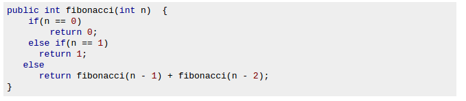

Post Title
The subtitle, if you want it
Today's Date
A recursive method is a method that calls itself. They are used when a larger problem can be broken down into several similar smaller problems. A good example of this would be the Fibonacci sequence. Any number in the Fibonacci sequence is the sum of the previous two. In orer to find the fifth term, one would first need to find terms four and three. In order to know term three, one would need to know terms one and two. This sounds complicated but it isn't. The sequence goes (depending on where you start) 0,1,1,2,3,5,8,13,21. To find any term, you are doing a simple addition problem. This is where recursion is useful.

This is a mthod that can do the appropriate calculations and only takes a few lines. The difficult part is knowing the first two terms which is already given in the beginning of the method.
You may be thinking, "Well that's interesting, I thought I could do that using a while loop." You would be correct. In order to solve the same problem, you would need a lot more code, to keep track of where in the sequence you are and the actual value (sounds like a job for an array).
At its base, recursion can save time and computing power. To paraphrase another analogy I found: Imagine you are with 5,000 people in a line and you need to find out who the shortest person is. While loops would take the first person and compare them to the one next in line. Whoever is shortest would be the "possible shortest person" and they would be dethroned when they found someone in line who was shorter. The problem with this is the people at the end of the line who have to wait. They may be tall, but they haven't been eliminated yet. Recursion breaks the process down into more effective steps. Step one would be to tell everyone to compare their height to the person next to them. The taller person would leave and the line would be cut in half. If they can't decide who is taller you can help. After only a few iterations of this the line would become very short. Finding the short person would take a lot less time and that is what recursion does.
As it turns out, recursion is not useful very frequently. In fact, it is almost never mandatory but is used more for style and efficiency. As we know, in programming there are always several ways to accomplish the same goal. Recursion is simply another strategy to model information, especially numbers. If you are struggling with recursion try to rewrite loops as recursive methods. It will be mentally taxing, but you never know when it may come in handy.